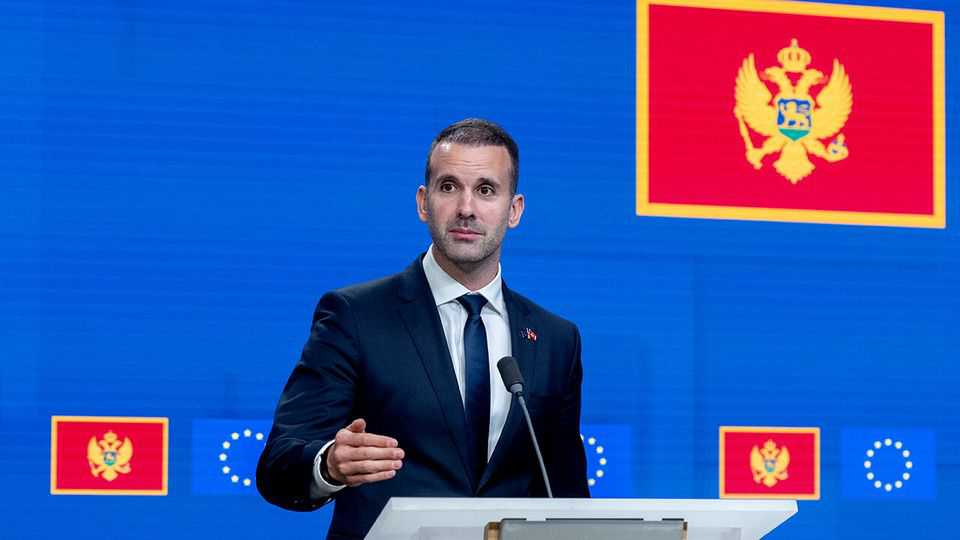
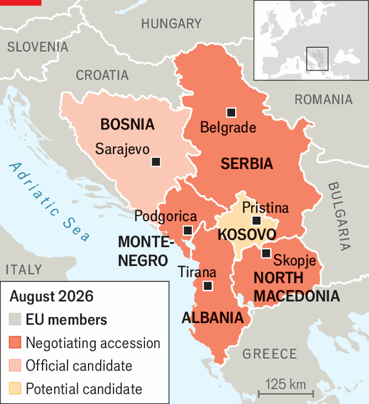

Tiny Montenegro still hopes it will be the EU’s next member
EU members, especially France, may be in no mood for enlargement

Sep 3rd 2026
Western Balkan countries have a joke about their long efforts to join the European Union: “We pretend to reform and they pretend to want us.” Yet Russia’s invasion of Ukraine in 2022 injected new life into the process, and Montenegro’s government thinks it has a chance soon. With just 630,000 residents, Montenegro would cost the EU relatively little in aid. Its agricultural exports are too small to worry Europe’s farmers, and it poses no risk of significant labour migration.
At a summit in Montenegro in June, EU leaders fell over themselves to praise their host’s progress. The country’s government aims to finish aligning with the bloc’s standards by the end of this year, and join in 2028. Ursula von der Leyen, the president of the European Commission, called that schedule “within reach”. But Iceland’s vote on August 29th against restarting its accession negotiations has dampened the mood. Some hoped a bid by a rich northern country would boost momentum. Now the aspirants will simply have to persuade Europeans that bringing in poorer south-eastern countries is in their interests.

Of the western Balkan countries, Montenegro is at the head of the pack. Albania is next, while Kosovo and Bosnia & Herzegovina are making little progress. North Macedonia is blocked by its hostile neighbour Bulgaria. Serbia, the biggest of the six, got a red light from eight members in July, mainly over its autocratic governance. On August 27th Montenegro’s prime minister, Milojko Spajic, said that two neighbouring countries (clearly meaning Serbia and Albania) were trying to slow the country’s accession, presumably out of jealousy.
After Yugoslavia broke up, Montenegro was dominated for decades by one party, which led it to independence and NATO membership. In 2020 that was replaced by a coalition including pro-Serb groups. Europhiles feared Serbia would run the country’s foreign policy. That has not happened; relations between the countries are poor. The prospect of EU accession has led parties to co-operate on reforms.
Sceptics say the changes are cosmetic, and note that EU leaders have stopped talking about Montenegro’s powerful drug-smuggling clans. Expansion-minded Europeans worry that if a tiny country cannot get in, Ukraine and others have no hope. The biggest risk is France. President Emmanuel Macron supports accession. But French law requires a referendum or three-fifths of both houses of parliament to approve the accession of a new member. According to Eurobarometer, just 35% of the French support expanding the union. And Mr Macron will leave office next year. He may be succeeded by Marine Le Pen of the populist-right National Rally, who firmly opposes enlargement.
When Mr Macron visited Montenegro in June he signed a series of political and business agreements, including one aimed at building a favourable image of Montenegro in France. But Jovana Marovic, a former minister of European affairs in Montenegro, is not optimistic. A majority in favour of ratifying accession for any future members, she says, “simply does not exist” in France’s parliament.
“This is an extremely unpopular thing to say,” Ms Marovic continues. “The atmosphere in Montenegro is almost euphoric, as if EU accession were already a done deal.” She thinks there is time for her country to build support for accession among EU members. For the moment, many are as wary of letting in new countries as the Icelanders were about joining. ■